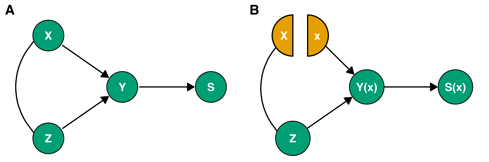
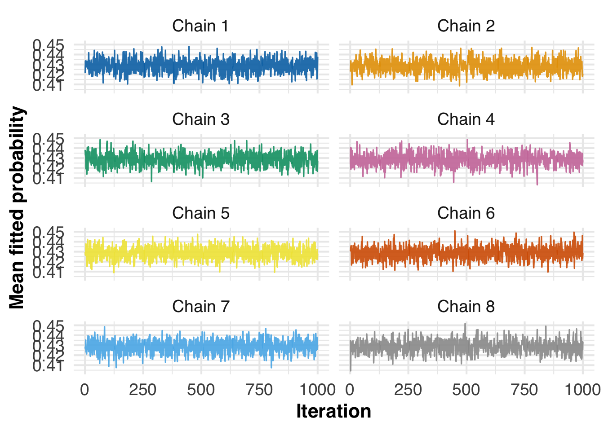
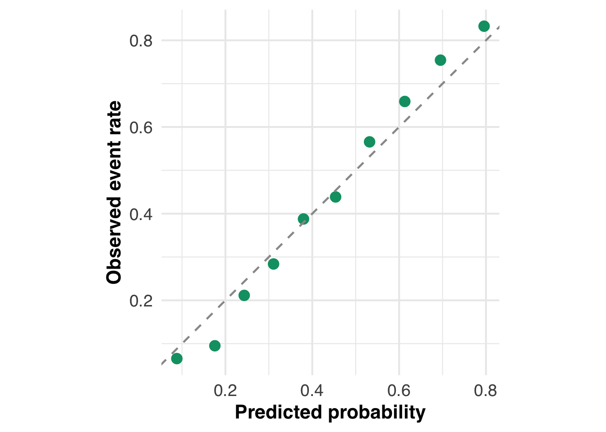
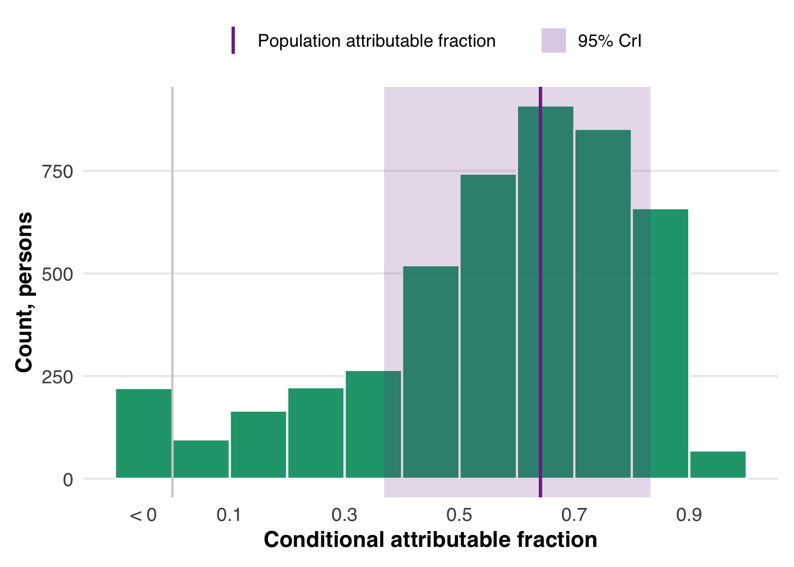

# Load necessities
source("R/imports.R")Causal inference / SEED
Introduction
We study how early-life factors influence the likelihood of autism using data from the Study to Explore Early Development (SEED). We proceed one factor at a time, which we denote by \(X\). The outcome, autism status, is denoted by \(Y\). The remaining early-life factors are denoted by \(Z\) and include both the other predictors we care about and other variables that may confound the relationship For each choice in \(X\), we compare what happens when that factor changes, while holding fixed a common set of other early-life variables. For instance, when examining maternal age, we also adjust for paternal age and related perinatal factors that are related to maternal age and autism. Using the same adjustment set throughout keeps the comparisons consistent: every effect is defined within the same causal framework.
Our goal is to make causal statements. Not just associations, but answers to questions like what would happen if a predictor were set to one value rather than another? We formalize this through two contrasts. The first is a conditional relative risk: for a given covariate profile \(Z=z\), how would the likelihood of autism change if we set the predictor to \(x\) instead of \(x'\)? The second is a population relative risk: how would the overall likelihood of autism change if we made that same shift for everyone?
To define these quantities, we need a model of how the data arise. We use a structural model that encodes the relationships among variables in SEED. One complication is that SEED is a case–control study; it oversamples autism cases. To account for this, we introduce a sampling indicator \(S\), which separates the sampled data from the underlying population. The causal quantities we seek live in that population, not just in the sample we observe.

A companion protocol paper details the assumptions required to interpret these results causally. Chief among them is no unmeasured confounding: after conditioning on the observed covariates \(Z\), the predictor \(X\) can be treated as if randomly assigned. Correct specification of the relationship among \(Y\), \(X\), and \(Z\) is also critical, as misspecification can induce bias even with appropriate adjustment. To reduce this risk, we use Bayesian Additive Regression Trees (BART), which flexibly captures nonlinearities and interactions while maintaining regularization. This balance makes BART a strong starting point for causal inference.
So far, we have focused on one predictor at a time. Now we turn to the joint effect of many factors. Let \(X\) denote the collection of early-life factors of interest, taken together. The remaining variables, those we adjust for but do not measure causal effects for, are collected in \(Z\).
We consider what would happen if we could shift all of \(X\) at once. We define attributable fractions. These summarize how the likelihood of autism would change under a joint shift in all predictors. There are two versions. The first is the conditional attributable fraction. For a given observed predictor and covariate profile \((X,Z)\), it measures the proportional change in likelihood if all predictors were set to a common reference level \(x^*\).
The second is the population attributable fraction. We compare the observed likelihood of autism in the entire population to the likelihood under a scenario in which everyone’s predictors are set to the same reference level \(x^*\). The link between the two attributable fractions is described in the companion protocol paper.
There is one complication. The components of \(X\) are correlated, and they may interact. So a joint shift in \(X\) does not decompose cleanly into separate effects. To make this interpretable, we break the joint effect apart. Using a Shapley decomposition, we write each profile-specific conditional attributable fraction as a sum of contributions from the components of \(X\). These contributions reflect how each factor participates in the joint effect.
Averaging these contributions across individuals yields population-level summaries. In this way, the population attributable fraction can also be expressed as a sum of predictor-specific contributions. Aggregating these contributions across individuals yields population-level summaries. In this way, the population attributable fraction can also be expressed as a sum of predictor-specific contributions.
Configuration
We begin by setting up the environment. Sourcing R/imports.R loads the libraries and helper functions that the rest of the notebook relies on.
We also fix a random seed so that all stochastic steps in the pipeline (imputation, resampling, and model fitting) are reproducible.
# Set seed for reproducibility across the entire pipeline
set.seed(20260322)Next, we load a configuration file, config_1.yaml. This file holds the key pieces of the analysis: where the data live, which variables are treated as predictors, which are used for adjustment, and how the outcome is defined. It also records how missingness is handled and any modeling options needed later on.
The configuration plays a central role. Rather than changing code, we change this file and rerun the pipeline.
# Load configuration
config <- yaml::read_yaml("config_1.yaml")With the configuration in hand, we read in the dataset it points to.
# Load data
raw_df <- readr::read_csv(config$data_file)We then extract the variables that define the analysis. The predictors are the early-life factors whose effects we study. The covariates are used to adjust for confounding. The outcome is the response of interest.
To check that everything has been read correctly, we summarize these variables in a table.
# Extract predictors
predictors_df <- dplyr::bind_rows(config$predictors)
predictors_df$category <- "Predictor"
# Extract covariates
covariates_df <- dplyr::bind_rows(config$covariates)
covariates_df$category <- "Covariate"
# Extract outcome
outcome_df <- dplyr::bind_rows(list(config$outcome))
outcome_df$category <- "Outcome"
# Combine
var_summary <- dplyr::bind_rows(
predictors_df,
covariates_df,
outcome_df
)
# Rename and reorder
var_summary <- var_summary |>
dplyr::rename(
Name = name,
Type = type,
Category = category
) |>
dplyr::select(Category, Name, Type)
# Render
knitr::kable(var_summary, caption = "Variables defined in the configuration files.")| Category | Name | Type |
|---|---|---|
| Predictor | sbp | continuous |
| Predictor | smoker_current | categorical |
| Predictor | hdl_c | continuous |
| Predictor | tot_chol | continuous |
| Predictor | bp_treated | categorical |
| Covariate | age | continuous |
| Covariate | sex | categorical |
| Covariate | race | categorical |
| Outcome | diabetes | categorical |
Data preparation
Coerce data type
We now prepare the dataset for analysis. We begin by keeping only the variables named in the configuration: the predictors, the covariates, and the outcome. We then assign each variable its intended type (continuous or categorical) so the data match the analysis plan.
# Prepare variables and coerce their data types
result <- coerce_variable_types(raw_df,config)
# Inspect the cleaned dataset
cat("\n--- Coerced Data Summary ---\n")
--- Coerced Data Summary ---coerced_df <- result$coerced_df
print(summary(coerced_df)) sbp smoker_current hdl_c tot_chol bp_treated
Min. : 76.33 0 :1529 Min. : 5.00 Min. : 71.0 0 : 343
1st Qu.:115.00 1 :1047 1st Qu.: 42.00 1st Qu.:161.0 1 :2284
Median :126.00 NA's:3175 Median : 51.00 Median :188.0 NA's:3124
Mean :128.52 Mean : 53.73 Mean :190.4
3rd Qu.:139.67 3rd Qu.: 62.00 3rd Qu.:217.0
Max. :218.67 Max. :187.00 Max. :446.0
NA's :868 NA's :752 NA's :752
age sex race diabetes
Min. :40.00 Female:2911 Black:1633 Min. :0.0000
1st Qu.:49.00 Male :2840 Other:2208 1st Qu.:0.0000
Median :59.00 White:1910 Median :0.0000
Mean :58.21 Mean :0.2153
3rd Qu.:66.00 3rd Qu.:0.0000
Max. :79.00 Max. :1.0000
NA's :210 # Inspect per-predictor statistics
cat("\n--- Continuous Predictor Summary ---\n")
--- Continuous Predictor Summary ---predictor_stats_df <- result$predictor_stats_df
print(predictor_stats_df) predictor mean sd q10 q90
1 sbp 128.51611 19.35054 106.3333 153.6667
2 hdl_c 53.72575 16.37551 36.0000 75.0000
3 tot_chol 190.43669 42.11713 139.0000 244.0000Add missingness indicators
Some variables carry information not only through their values, but also through whether those values are missing. For selected variables, we handle missingness explicitly. For continuous variables, we add a binary missingness indicator and replace missing values with zero as a placeholder. For categorical variables, we add “Missing” as its own level. This allows missingness itself to enter the analysis, rather than being silently ignored.
# Add missingness indicators
result <- add_missingness_indicators(coerced_df, config)
indicated_df <- result$indicated_df
final_config <- result$config
# Summarize data
summary(indicated_df) sbp smoker_current hdl_c tot_chol bp_treated
Min. : 76.33 0 :1529 Min. : 5.00 Min. : 71.0 0 : 343
1st Qu.:115.00 1 :1047 1st Qu.: 42.00 1st Qu.:161.0 1 :2284
Median :126.00 Missing:3175 Median : 51.00 Median :188.0 NA's:3124
Mean :128.52 Mean : 53.73 Mean :190.4
3rd Qu.:139.67 3rd Qu.: 62.00 3rd Qu.:217.0
Max. :218.67 Max. :187.00 Max. :446.0
NA's :868 NA's :752 NA's :752
age sex race diabetes
Min. :40.00 Female:2911 Black:1633 Min. :0.0000
1st Qu.:49.00 Male :2840 Other:2208 1st Qu.:0.0000
Median :59.00 White:1910 Median :0.0000
Mean :58.21 Mean :0.2153
3rd Qu.:66.00 3rd Qu.:0.0000
Max. :79.00 Max. :1.0000
NA's :210 Impute remaining missingness
After this step, some missing values may still remain. We fill these in using single imputation, producing a complete dataset for downstream analysis.
# Single imputation using the mice function
imputed_df <- impute_missing_data(indicated_df, final_config)
# Summarize data
summary(imputed_df) sbp smoker_current hdl_c tot_chol bp_treated
Min. : 76.33 0 :1529 Min. : 5.00 Min. : 71.0 0: 872
1st Qu.:115.17 1 :1047 1st Qu.: 42.00 1st Qu.:161.0 1:4879
Median :126.33 Missing:3175 Median : 51.00 Median :188.0
Mean :128.70 Mean : 53.79 Mean :190.2
3rd Qu.:139.67 3rd Qu.: 62.00 3rd Qu.:216.0
Max. :218.67 Max. :187.00 Max. :446.0
age sex race diabetes
Min. :40.00 Female:2911 Black:1633 Min. :0.0000
1st Qu.:49.00 Male :2840 Other:2208 1st Qu.:0.0000
Median :59.00 White:1910 Median :0.0000
Mean :58.21 Mean :0.2153
3rd Qu.:66.00 3rd Qu.:0.0000
Max. :79.00 Max. :1.0000
NA's :210 Remove observations with missing outcomes
One final detail remains. If the outcome is missing, that observation cannot be used. So we remove rows with missing outcome values and take what remains as the analytic dataset for the analysis.
# Finalize analytic dataset
analytic_df <- finalize_analytic_dataset(imputed_df, final_config)Dropped 210 rows with missing outcome (diabetes).# Summarize
summary(analytic_df) sbp smoker_current hdl_c tot_chol bp_treated
Min. : 76.33 0 :1471 Min. : 5.00 Min. : 71.0 0: 844
1st Qu.:115.00 1 :1017 1st Qu.: 42.00 1st Qu.:161.0 1:4697
Median :126.33 Missing:3053 Median : 51.00 Median :188.0
Mean :128.63 Mean : 53.83 Mean :190.3
3rd Qu.:139.67 3rd Qu.: 62.00 3rd Qu.:216.0
Max. :218.67 Max. :187.00 Max. :446.0
age sex race diabetes
Min. :40.00 Female:2820 Black:1566 Min. :0.0000
1st Qu.:49.00 Male :2721 Other:2113 1st Qu.:0.0000
Median :59.00 White:1862 Median :0.0000
Mean :58.16 Mean :0.2153
3rd Qu.:66.00 3rd Qu.:0.0000
Max. :79.00 Max. :1.0000 At this point, the dataset is ready for analysis. The predictors, covariates, and outcome are defined by the configuration, and any preprocessing steps have been applied. To confirm what enters the analysis, we summarize these variables below.
# Extract predictors
predictors_df <- dplyr::bind_rows(final_config$predictors)
predictors_df$category <- "Predictor"
# Extract covariates
covariates_df <- dplyr::bind_rows(final_config$covariates)
covariates_df$category <- "Covariate"
# Extract outcome
outcome_df <- dplyr::bind_rows(list(final_config$outcome))
outcome_df$category <- "Outcome"
# Combine, rename, and reorder
var_summary <- dplyr::bind_rows(
predictors_df,
covariates_df,
outcome_df
) |>
dplyr::rename(
Name = name,
Type = type,
Category = category
) |>
dplyr::select(Category, Name, Type)
# Render table
knitr::kable(
var_summary,
caption = "Variables used in the analysis after preprocessing."
)| Category | Name | Type |
|---|---|---|
| Predictor | sbp | continuous |
| Predictor | smoker_current | categorical |
| Predictor | hdl_c | continuous |
| Predictor | tot_chol | continuous |
| Predictor | bp_treated | categorical |
| Covariate | age | continuous |
| Covariate | sex | categorical |
| Covariate | race | categorical |
| Outcome | diabetes | categorical |
Optional sandbox resampling
Sometimes we work with a sandbox dataset. This is not the dataset of scientific interest, but a stand-in used to run the full pipeline and see how it behaves. In that setting, we add one extra step. We resample cases and controls to a target size. The goal is to check whether the sample size is large enough for the analysis to be stable. This step is not part of the primary analysis.
# Optional sandbox-only resampling step
# Trigger when using the sandbox example (diabetes outcome)
is_sandbox_data <- identical(final_config$outcome$name, "diabetes")
if (is_sandbox_data) {
# Target sample sizes for cases and controls
n_cases <- 2027
n_controls <- 2696
# Resample with replacement within outcome groups
analytic_df <- dplyr::bind_rows(
analytic_df |>
dplyr::filter(.data[[final_config$outcome$name]] == 1) |>
dplyr::slice_sample(n = n_cases, replace = TRUE),
analytic_df |>
dplyr::filter(.data[[final_config$outcome$name]] == 0) |>
dplyr::slice_sample(n = n_controls, replace = TRUE)
)
# Inform the user that sandbox resampling was applied
message("Sandbox resampling applied.")
}Model building
We next fit a Bayesian Additive Regression Trees (BART) model for the conditional probability of the outcome in the sampled population, \[\Pr(Y = 1 \mid X, Z, S = 1).\] Here, \(Y\) is the outcome, \(X\) is the predictor of interest, \(Z\) is the set of adjustment variables, and \(S = 1\) indicates that the individual is in the sampled dataset. BART provides a flexible, nonparametric model for this conditional probability. Rather than specifying a functional form, it learns nonlinearities and interactions directly from the data. The fitted model (bart_fit) serves as the foundation for all subsequent effect estimates.
# Identify outcome and predictors of interest
outcome_var <- final_config$outcome$name
predictor_vars <- vapply(final_config$predictors, `[[`, character(1), "name")
# All remaining variables enter as adjustment variables
adjustment_vars <- setdiff(names(analytic_df), c(outcome_var, predictor_vars))
# Construct design matrix and outcome vector
x_train <- analytic_df[, c(adjustment_vars, predictor_vars), drop = FALSE]
y_train <- analytic_df[[outcome_var]]
# Numerical parameters for BART
nchain <- 8L
nskip <- 30000L
ndpost <- 1000L
model_path <- "outputs/models/reference_outcome_bart.rds"
# Reuse the fitted model when it is already available. Otherwise, fit and save
# it once.
if (file.exists(model_path)) {
bart_fit <- readRDS(model_path)
} else {
dir.create("outputs/models", recursive = TRUE, showWarnings = FALSE)
bart_fit <- dbarts::bart(
x.train = x_train,
y.train = y_train,
keeptrees = TRUE,
verbose = FALSE,
nchain = nchain,
nthread = 8L,
nskip = nskip,
ndpost = ndpost * 12L,
keepevery = 12L,
seed = 20260322L
)
bart_fit$fit$storeState()
saveRDS(bart_fit, model_path)
}The model uses eight parallel chains with 30,000 burn-in iterations and 12,000 post-burn iterations per chain. Every twelfth post-burn draw is retained, giving 1,000 retained draws per chain and 8,000 retained draws overall.
We assess the BART fit using two simple checks.
First, we ask whether the model fitting procedure has stabilized. The algorithm produces many repeated draws of the fitted values. If these draws are wandering or drifting, then the fit is unreliable. We summarize these draws and check that they look stable over time, that successive draws are not too strongly dependent, and that independent runs of the algorithm agree with each other. Taken together, these checks tell us whether the fitting procedure has settled down.
Second, we ask whether the model’s predictions line up with what we actually observe. For each individual, the model produces a predicted probability of the outcome. We group individuals with similar predicted risk and compare the average predicted probability to the observed event rate within each group. If the model is well calibrated, these two should agree.
These checks are not exhaustive, but they answer two basic questions: has the fitting procedure stabilized, and do the resulting predictions match the data in a reasonable way.
# Run model diagnostics
diag_results <- model_diagnostics(
bart_fit = bart_fit,
analytic_df = analytic_df,
outcome_var = final_config$outcome$name,
save_path = "outputs/diagnostics/software_comparison/dbarts_bart",
nchain = nchain,
ndpost = ndpost
)Below we show a trace plot. The horizontal axis indexes successive draws from the fitting procedure, and the vertical axis shows a summary of the fitted values. Each panel corresponds to an independent run of the algorithm. If the procedure has stabilized, the traces should fluctuate around a constant level and look similar across panels.
diag_results$plots$trace
Below we show the calibration plot. Each point summarizes a group of individuals with similar predicted risk. The horizontal axis shows what the model predicts, and the vertical axis shows what actually happens. The dashed line represents perfect agreement. Points below the line indicate overprediction, while points above the line indicate underprediction.
diag_results$plots$calib
Effect estimation
Conditional relative risks
We now use the fitted BART model to study how risk changes with one predictor while holding the covariate profile fixed. For each observed covariate profile \(z\) and posterior draw \(\theta^{(m)}\), the model gives a predicted probability of the outcome, \[\widehat{\mu}(x, z; \theta^{(m)}) \approx \Pr(Y = 1 \mid X=x, Z=z, S = 1).\] Because the model can be evaluated at any input, we can change a predictor \(X\) from one value \(x'\) to another value \(x\) while keeping \(Z=z\). This compares two hypothetical predictor settings conditional on the same covariate profile.
We summarize this comparison using a conditional relative risk: \[\mathrm{CRR}(x,x',z) = \frac{\Pr(Y(x)=1 \mid Z=z)}{\Pr(Y(x')=1 \mid Z=z)},\] which measures how much more or less likely the outcome would be under \(x\) than under \(x'\) among those with covariate profile \(z\). Here, \(Y(x)\) and \(Y(x')\) denote the potential outcomes under the two predictor settings.
In practice, we approximate this quantity using the fitted model. For each posterior draw, we evaluate the predicted probabilities under the two scenarios and compute an odds ratio, \[\mathrm{CRR}(x,x',z) \approx \frac{\widehat{\mu}(x, z; \theta^{(m)})(1-\widehat{\mu}(x', z; \theta^{(m)}))} {\widehat{\mu}(x', z; \theta^{(m)})(1-\widehat{\mu}(x, z; \theta^{(m)}))}\] The justification for this approximation, and the assumptions behind it, are given in the protocol.
We repeat this computation for each observed covariate profile, predictor, and posterior draw. This yields a distribution of conditional effects that reflects heterogeneity across covariate profiles and uncertainty in the fitted model.
To make the comparisons concrete, we fix a reference contrast for each predictor. For categorical predictors, we compare each level \(x\) with a reference level \(x'\), taken to be the most common category.
For categorical predictors, we contrast every level of the predictor (\(x\)) against the most common level (\(x'\)). For continuous predictors, we compare two representative values: the 90th and 10th percentiles, denoted by x and x’. These percentiles are computed from the original data (i.e., before imputation).
# Compute relative risks
irr_results <- compute_causal_relative_risks(
bart_fit = bart_fit,
analytic_df = analytic_df,
config = final_config,
predictor_stats_df = predictor_stats_df
)These contrasts produce a posterior distribution of conditional relative risks for each observed covariate profile and predictor. We summarize each distribution by its posterior median and visualize the resulting profile-specific effects below.
# Plot posterior mean conditional relative risks
plot_individual_rr(
irr_results$irr_summary_df,
final_config,
predictor_stats_df,
save_path = "outputs/individual_rr.png",
save_path_vertical = "outputs/individual_rr_vertical.png"
)
Population relative risks
So far we have focused on conditional relative risks: how the predicted likelihood of autism changes from \(x'\) to \(x\) conditional on \(Z=z\). We now move to the population level. We compare two hypothetical worlds: one in which everyone’s predictor is set to \(x\), and one in which it is set to \(x'\). The quantity of interest is the population relative risk: \[\mathrm{PRR}(x,x') = \frac{\Pr(Y(x)=1)}{\Pr(Y(x')=1)},\] which captures how the overall risk would change under these two settings.
As shown in the protocol, this population quantity can be recovered by taking a weighted average of the conditional relative risks, with weights that adjust for how the analytic sample relates to the target population. For each observed covariate profile, these weights are proportional to \[\frac{ \Pr(Y = 1 \mid Z, X = x', S = 1)\, \Pr(Y = 1) / \Pr(Y = 1 \mid S = 1) }{ \sum_{y=0,1} \Pr(Y = y \mid Z, X = x', S = 1)\, \Pr(Y = y) / \Pr(Y = y \mid S = 1) }.\]
In practice, each term in this expression is estimated as follows:
\(\Pr(Y=1)\) and \(\Pr(Y=0)\) are specified in the
configfile, reflecting the target population.\(\Pr(Y=1 \mid S=1)\) and \(\Pr(Y=0 \mid S=1)\) are computed directly from the analytic dataset
\(\Pr(Y=y \mid Z, X=x', S=1)\) is obtained from the fitted BART model
For each posterior draw, we compute these weights and take a weighted average of the conditional relative risks across the observed covariate profiles. Repeating this across posterior draws gives a distribution for the population relative risk, which we summarize using the posterior median and a 95% credible interval.
These population quantities appear in the table below:
# Put together table of population relative risks
# Extract readable predictor labels from config
label_map <- unlist(final_config$predictor_labels)
# Build predictor type lookup from config
predictor_type_df <- dplyr::bind_rows(final_config$predictors) %>%
dplyr::select(name, type) %>%
dplyr::rename(predictor_raw = name)
# Identify truly binary categorical predictors
binary_predictors <- irr_results$weighted_summary %>%
dplyr::left_join(predictor_type_df, by = c("predictor" = "predictor_raw")) %>%
dplyr::filter(type == "categorical") %>%
dplyr::mutate(
contrast_trim = trimws(as.character(contrast))
) %>%
dplyr::group_by(predictor) %>%
dplyr::summarise(
is_binary =
all(grepl("\\b[01]\\b", contrast_trim)) &&
!any(grepl("\\b[2-9]\\b", contrast_trim)),
.groups = "drop"
)
# Clean categorical contrasts
clean_categorical_contrast <- function(x, is_binary) {
x <- trimws(as.character(x))
if (is_binary) {
x <- gsub("\\b1\\b", "Yes", x)
x <- gsub("\\b0\\b", "No", x)
}
x
}
# Clean continuous contrasts using 90th and 10th percentiles from predictor_stats_df
clean_continuous_contrast <- function(contrast, q10 = NA_real_, q90 = NA_real_) {
# Show the implied low/high values
low <- round(q10)
high <- round(q90)
return(paste0(high, " vs ", low))
}
irr_results$weighted_summary |>
dplyr::left_join(
predictor_type_df,
by = c("predictor" = "predictor_raw")
) |>
dplyr::left_join(
predictor_stats_df |> dplyr::select(predictor, q10, q90),
by = "predictor"
) |>
dplyr::left_join(
binary_predictors,
by = "predictor"
) |>
dplyr::rowwise() |>
dplyr::mutate(
is_binary = dplyr::coalesce(is_binary, FALSE),
predictor = dplyr::if_else(
!is.null(label_map) & predictor %in% names(label_map),
unname(label_map[predictor]),
predictor
),
contrast = dplyr::case_when(
type == "continuous" ~ clean_continuous_contrast(contrast, q10, q90),
TRUE ~ clean_categorical_contrast(contrast, is_binary)
),
posterior_median = round(posterior_median, 2),
ci_lower = round(ci_lower, 2),
ci_upper = round(ci_upper, 2)
) |>
dplyr::ungroup() |>
dplyr::select(predictor, contrast, posterior_median, ci_lower, ci_upper) |>
kable(
caption = "Posterior median and 95% credible interval for population relative risks",
col.names = c("Predictor", "Contrast", "Posterior Median", "95% CI Lower", "95% CI Upper"),
align = "lcccc",
booktabs = TRUE
) |>
kable_styling(
full_width = FALSE,
position = "center",
bootstrap_options = c("striped", "hover")
)| Predictor | Contrast | Posterior Median | 95% CI Lower | 95% CI Upper |
|---|---|---|---|---|
| Systolic blood pressure, mmHg | 154 vs 106 | 1.40 | 0.99 | 2.04 |
| Current smoking | Yes vs No | 0.96 | 0.75 | 1.26 |
| Current smoking | Missing vs No | 0.82 | 0.67 | 1.00 |
| HDL cholesterol, mg/dL | 75 vs 36 | 0.34 | 0.22 | 0.49 |
| Total cholesterol, mg/dL | 244 vs 139 | 0.31 | 0.20 | 0.50 |
| Blood pressure medication | No vs Yes | 0.66 | 0.51 | 0.89 |
Conditional attributable fractions
We next consider conditional and population attributable fractions. The conditional attributable fraction measures how much of the predicted likelihood of autism for an observed predictor and covariate profile is attributable to that predictor profile, relative to a reference profile representing lower-risk predictor values.
This differs from the conditional relative risks considered earlier in two ways. First, conditional relative risks compare two fixed values of a single predictor (e.g., “exposed” vs. “unexposed”), without regard to how common those values are. As a result, they describe the effect for a chosen contrast but not how much the observed predictor profile contributes to risk. Second, they vary one predictor at a time while holding all others fixed. The attributable fraction instead considers all predictors together and measures their joint contribution relative to a common baseline.
The conditional attributable fraction is defined as \[\mathrm{CAF}(x^*,X,Z) = \frac{\Pr\left(Y=1\mid X,Z\right)-\Pr\left(Y(x^*)=1\mid X,Z\right)}{\Pr\left(Y=1\mid X,Z\right)}.\] Here, \(X\) is the full observed predictor profile. The numerator is the counterfactual reduction in predicted probability if \(X\) were set to \(x^*\) while \(Z\) remained fixed, and the denominator is the predicted probability under the observed profile. The CAF is therefore conditional on the observed values of \(X\) and \(Z\).
The reference profile \(x^*\) is constructed from the estimated population relative risks. For each predictor, we select a value associated with lower estimated risk: for continuous predictors, this is either the 10th or 90th percentile depending on whether the estimated relative risk is greater than or less than one; for categorical predictors, it is the level with the smallest estimated relative risk. If an individual has a missingness indicator equal to one for a given predictor, that predictor is left unchanged, since its value is not observed and cannot be modified. In this way, \(x^*\) is assembled predictor by predictor to represent a systematically lower-risk configuration under the fitted model.
Because the attributable fraction can be written as one minus a relative risk comparing the reference and observed predictor profiles, it can be estimated using similar posterior predictions as before. For each posterior draw \(\theta^{(m)}\), we compute \[\widehat{\mathrm{CAF}}(x^*,X,Z)=1 - \frac{\widehat{\Pr}(Y=1 \mid X=x^*, Z, S=1; \theta^{(m)})/\widehat{\Pr}(Y=0 \mid X=x^*, Z, S=1; \theta^{(m)})} {\widehat{\Pr}(Y=1 \mid X, Z, S=1; \theta^{(m)})/\widehat{\Pr}(Y=0 \mid X, Z, S=1; \theta^{(m)})}.\] Operationally, for each posterior draw and observed profile, we generate one prediction under \(X\) and another under \(x^*\) while holding \(Z\) fixed. Subtracting the resulting odds ratio from one gives the CAF. Repeating this calculation across posterior draws yields a posterior distribution for each observed profile, which we summarize by its median.
# Compute conditional and population attributable fractions
af_results <- compute_attributable_fractions(
bart_fit = bart_fit,
analytic_df = analytic_df,
config = final_config,
irr_results = irr_results,
predictor_stats_df
)The low-risk reference profile used for the attributable fractions is shown below.
label_map <- unlist(final_config$predictor_labels)
ref_table <- af_results$ref_predictors |>
dplyr::mutate(
dplyr::across(where(is.numeric), ~ round(.x, 2)),
dplyr::across(everything(), as.character)
) |>
tidyr::pivot_longer(
cols = everything(),
names_to = "predictor",
values_to = "reference_value"
) |>
dplyr::mutate(
predictor = ifelse(
predictor %in% names(label_map),
unname(label_map[predictor]),
predictor
)
)
knitr::kable(
ref_table,
col.names = c("Predictor", "Low-risk reference value"),
caption = "Constructed low-risk reference configuration used in the attributable fraction calculations.",
booktabs = TRUE,
align = c("l", "l")
) |>
kableExtra::kable_styling(
full_width = FALSE,
position = "center",
bootstrap_options = c("striped", "hover")
)| Predictor | Low-risk reference value |
|---|---|
| Systolic blood pressure, mmHg | 106.33 |
| Current smoking | 1 |
| HDL cholesterol, mg/dL | 75 |
| Total cholesterol, mg/dL | 244 |
| Blood pressure medication | 0 |
We plot a histogram of the posterior medians of the conditional attributable fractions. Values near zero correspond to observed predictor profiles close to the low-risk reference. Larger values indicate that a greater share of the predicted risk conditional on \((X,Z)\) is tied to the observed predictor profile.
# Plot posterior medians of conditional attributable fractions
plot_individual_af(af_results$af_median,
af_results$paf_summary,
save_path = "outputs/individual_af_hist.png")
Population attributable fraction
While the conditional attributable fraction is defined for an observed predictor and covariate profile, the population attributable fraction aggregates this quantity to describe how much of the overall prevalence of autism could, in principle, be attributed to the predictors.
Formally, the population attributable fraction is defined as \[\mathrm{PAF}(x^*) = \frac{\Pr(Y=1) - \Pr(Y(x^*)=1)}{\Pr(Y=1)}.\] The numerator measures the reduction in population risk that would occur if everyone’s predictors were set to the reference profile \(x^*\), while the denominator anchors this change to the observed population risk.
In practice, we can estimate the PAF by taking the sample average of conditional attributable fractions among autism cases, \[\mathrm{PAF}=\mathbb{E}[\mathrm{CAF}(x^*,X,Z) \mid Y=1, S=1] \approx \mathbb{E}_N\left[\widehat{\mathrm{CAF}}(x^*,X,Z) \mid Y=1, S=1\right],\] which follows from a change-of-variables argument described in the protocol.
af_results$paf_summary |>
dplyr::select(posterior_median, ci_lower, ci_upper) |>
dplyr::mutate(
across(where(is.numeric), ~round(.x, 2))
) |>
knitr::kable(
caption = "Posterior median and 95% credible interval for the population attributable fraction",
col.names = c("Posterior Median", "95% CrI Lower", "95% CrI Upper"),
align = "ccc",
booktabs = TRUE,
row.names = FALSE
) |>
kableExtra::kable_styling(
full_width = FALSE,
position = "center",
bootstrap_options = c("striped", "hover")
)| Posterior Median | 95% CrI Lower | 95% CrI Upper |
|---|---|---|
| 0.64 | 0.37 | 0.83 |
Importance measures
To explain how each predictor contributes to the attributable fraction, we adapt Shapley values from cooperative game theory. In this framework, the conditional attributable fraction is expressed as an additive sum of contributions from each predictor, \[\mathrm{CAF}(x^*,X,Z)=\phi_0(x^*,X,Z)+\phi_1(x^*,X,Z)+\cdots+\phi_p(x^*,X,Z),\] where \(\phi_0(x^*,X,Z)\) is a baseline term and each \(\phi_j(x^*,X,Z)\) is the contribution of predictor \(j\) to the CAF for that observed profile.
These contributions are computed by averaging how much each predictor changes \(\mathrm{CAF}(x^*,X,Z)\) when added to subsets of other predictors. The subsets are formed by randomly ordering the predictors and adding them sequentially. Predictors not yet added are filled with values drawn from donor profiles. Averaging the incremental changes over many orderings gives an order-independent decomposition of the CAF.
af_shapley <- compute_shapley_af(
bart_fit = bart_fit,
analytic_df = analytic_df,
config = final_config,
p_ref = af_results$p_ref,
n_individuals = 200,
n_samples = 50,
n_donors = 50,
n_cores = 6
)Beeswarm plots visualize the Shapley values across observed profiles, showing how each predictor increases or decreases the conditional attributable fraction. Each point represents one profile-specific Shapley value for a given predictor, with color indicating the observed predictor value. The horizontal spread reflects heterogeneity in each predictor’s contribution across profiles. Positive values increase the CAF relative to the reference profile, while negative values decrease it.
af_shapley_plot <- plot_shapley_beeswarm(
af_shapley = af_shapley$individual_feature_shapley,
analytic_df = analytic_df,
config = final_config,
predictor_stats_df = predictor_stats_df,
save_path = "outputs/shapley_beeswarm.png",
save_path_vertical = "outputs/shapley_beeswarm_vertical.png"
)
Population Shapley decomposition
Just as the population attributable fraction is the average of conditional attributable fractions among autism cases, the population Shapley values average the profile-specific Shapley contributions across those cases. If \[\mathrm{CAF}(x^*,X,Z)=\phi_0(x^*,X,Z)+\phi_1(x^*,X,Z)+\cdots+\phi_p(x^*,X,Z),\] then \[\mathrm{PAF}(x^*)=\bar{\phi}_0(x^*)+\bar{\phi}_1(x^*)+\cdots+\bar{\phi}_p(x^*),\] where \(\bar{\phi}_j(x^*)\) is the average contribution of predictor \(j\) across cases.
The table below reports the posterior mean and 95% credible intervals for each predictor’s population-level Shapley value, summarizing the overall importance of each factor in shaping the likelihood of autism across the population.
af_shapley$population_feature_shapley |>
dplyr::select(feature, median_shapley, lower, upper, n_cases_used) |>
dplyr::mutate(
median_shapley = round(median_shapley, 3),
lower = round(lower, 3),
upper = round(upper, 3)
) |>
knitr::kable(
caption = "Posterior median and 95% credible interval for population-level Shapley values",
col.names = c("Predictor", "Posterior Median", "95% CI Lower", "95% CI Upper", "Cases Used"),
align = "lcccc",
booktabs = TRUE
) |>
kableExtra::kable_styling(
full_width = FALSE,
position = "center",
bootstrap_options = c("striped", "hover")
)| Predictor | Posterior Median | 95% CI Lower | 95% CI Upper | Cases Used | |
|---|---|---|---|---|---|
| sbp | sbp | 0.003 | -0.006 | 0.017 | 81 |
| smoker_current | smoker_current | 0.002 | -0.013 | 0.021 | 81 |
| hdl_c | hdl_c | 0.047 | 0.019 | 0.098 | 81 |
| tot_chol | tot_chol | 0.054 | 0.022 | 0.112 | 81 |
| bp_treated | bp_treated | 0.014 | 0.004 | 0.032 | 81 |